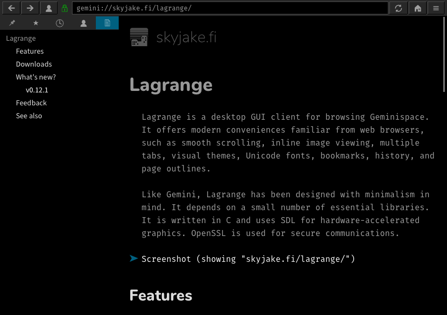

Desde mediados de 2019 se liberó la especificación de Project Gemini, el cual define un protocolo alternativo a HTTP junto a un formato para documentos alternativo a HTML llamado gemtext.
El fin último que se busca es eliminar la complejidad que implica desarrollar hoy en día un navegador web y crear un protocolo que sea sencillo de implementar por los desarrolladores, de forma tal de volver a "democratizar" la web -o por lo menos una alternativa a esta-.
Si bien hoy día puede utilizarse un proxy para acceder a sitios gemini, como por ejemplo vulpes, mi idea fué probar que alternativas a clientes hay actualmente. Luego de probar varios terminé eligiendo el cliente gráfico lagrange, que cuenta con paquetes para debian de forma no oficial -provistos por el desarrollador-:
$ wget -P /tmp/ 'https://git.skyjake.fi/skyjake/lagrange/releases/download/v0.12.1/lagrange_debian-buster.zip'
$ unzip -d /tmp/ /tmp/lagrange_debian-buster.zip
$ sudo dpkg -i /tmp/lagrange_0.12.1-1_amd64.deb
Algo bueno respecto a otros clientes gráficos es la poca cantidad de dependencias:
$ apt-cache show lagrange | grep -oP '^Depends:\K.*' | tr ',' '\n'
libc6 (>= 2.28)
libmpg123-0 (>= 1.6.2)
libpcre3
libsdl2-2.0-0 (>= 2.0.9)
libssl1.1 (>= 1.1.1)
libunistring2 (>= 0.9.7)
zlib1g (>= 1:1.1.4)
y por defecto el estilo para mostrar las páginas es bastante bueno.
A continuación la captura del sitio Lagrange (gemini):

Y el mismo sitio luego de hacer click en el link de una imagen, la cual el navegador embebe en la misma página:
Volviando a gemini, si bien la idea es interesante hay un par de aspectos que aún no me convencen del todo:
-
En general la idea de una página en gemtext es que no se precarguen las imagenes, lo que al día de hoy considero que es una restricción bastante fuerte. Por supuesto, esto puede configurarse en los clientes que lo permitan como se sugiere en la gemini mailing list: What's the status of gemini browsers and image handling?, aunque allí se vuelve a mencionar que:
text/gemini is intentionally text-y and pretty opinionated about that
-
No es posible realizar un equivalente a un POST de HTTP, o sea, enviar información al servidor.
-
Actualmente falta un buscador para gemini, lo cual debería ser eventualmente abordado por la comunidad.
Haciendo predicciones sobre gemini y esperando equivocarme: interesante si, usable por la mayoría no.